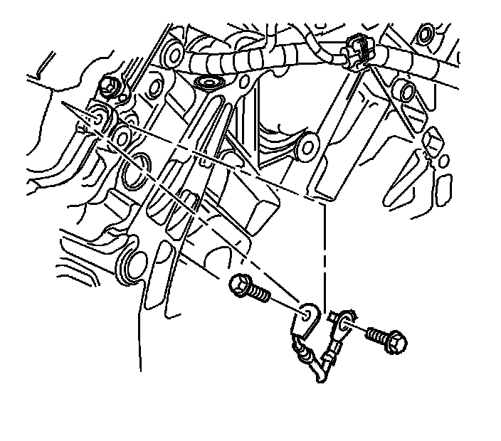
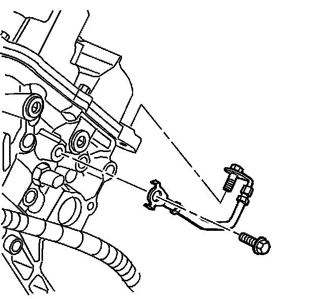

Engine Ground Strap Replacement
Engine Ground Strap Replacement (LH2 - Gas, 8 Cylinder, 4.6L, SFI, V8, DOHC, HO)
Removal Procedure

1. Remove the fuel injector sight shield. Refer to Fuel Injector Sight Shield Replacement (Service and Repair) .
2. Remove the bolts securing the left side ground strap to the cam cover and the engine block.
3. Remove the left side ground strap from the engine.

4. Remove the bolts securing the right side ground strap to the cam cover and the engine block.
5. Remove the right side ground strap from the cylinder head.
Installation Procedure
1. Install the right side ground strap into the vehicle.
Notice: Refer to Fastener Notice (Fastener Notice) .
2. Install the right side ground strap to cam cover bolt.
Tighten the ground strap to cam cover bolt to 10 N.m (89 lb in).
3. Install the right side ground strap to cylinder head bolt.
Tighten the ground strap to cylinder head bolt to 25 N.m (18 lb ft).
4. Install the left side ground strap into the vehicle.
5. Install the left side ground strap to cam cover bolt.
Tighten the ground strap to cam cover bolt to 10 N.m (89 lb in).
6. Install the left side ground strap to cylinder head bolt.
Tighten the ground strap to cylinder head bolt to 25 N.m (18 lb ft).
7. Install the fuel injector sight shield. Refer to Fuel Injector Sight Shield Replacement (Service and Repair) .